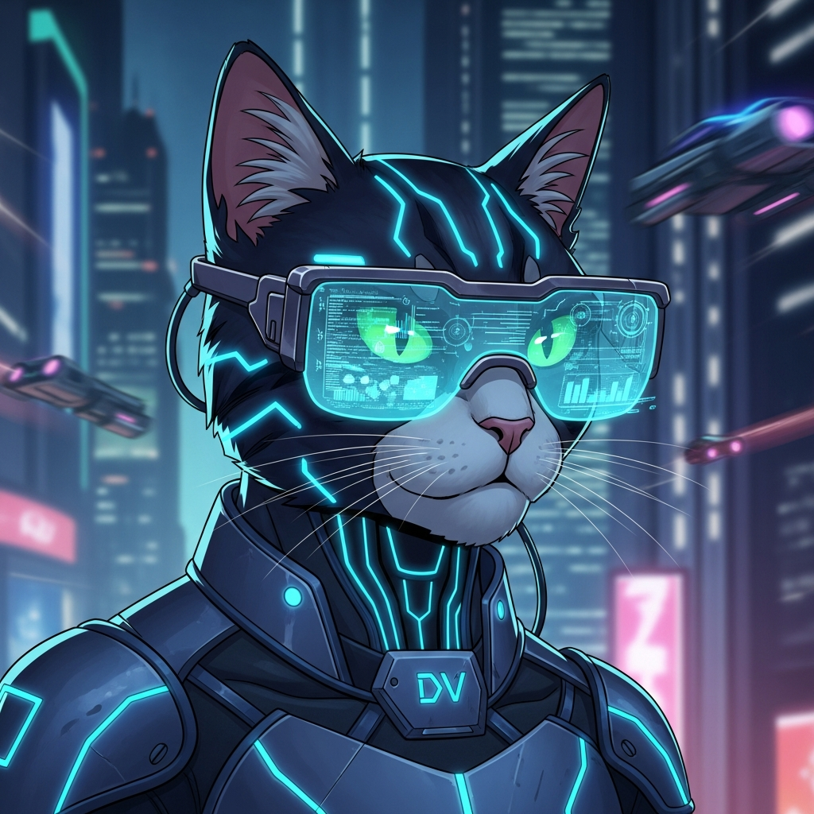
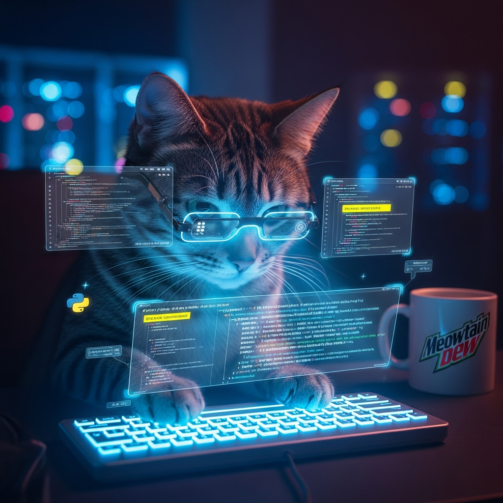
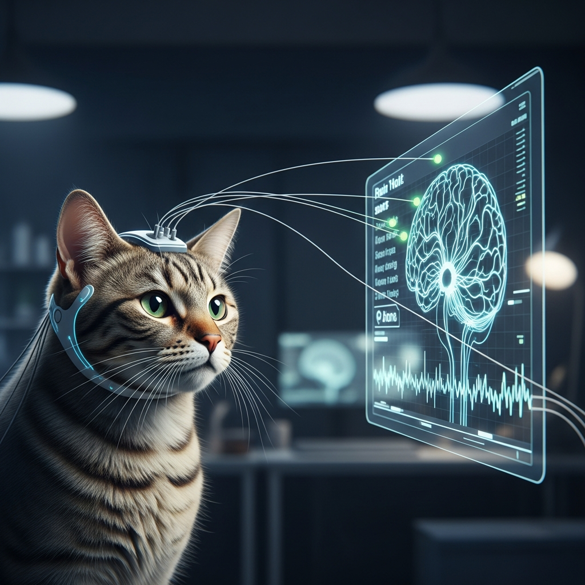
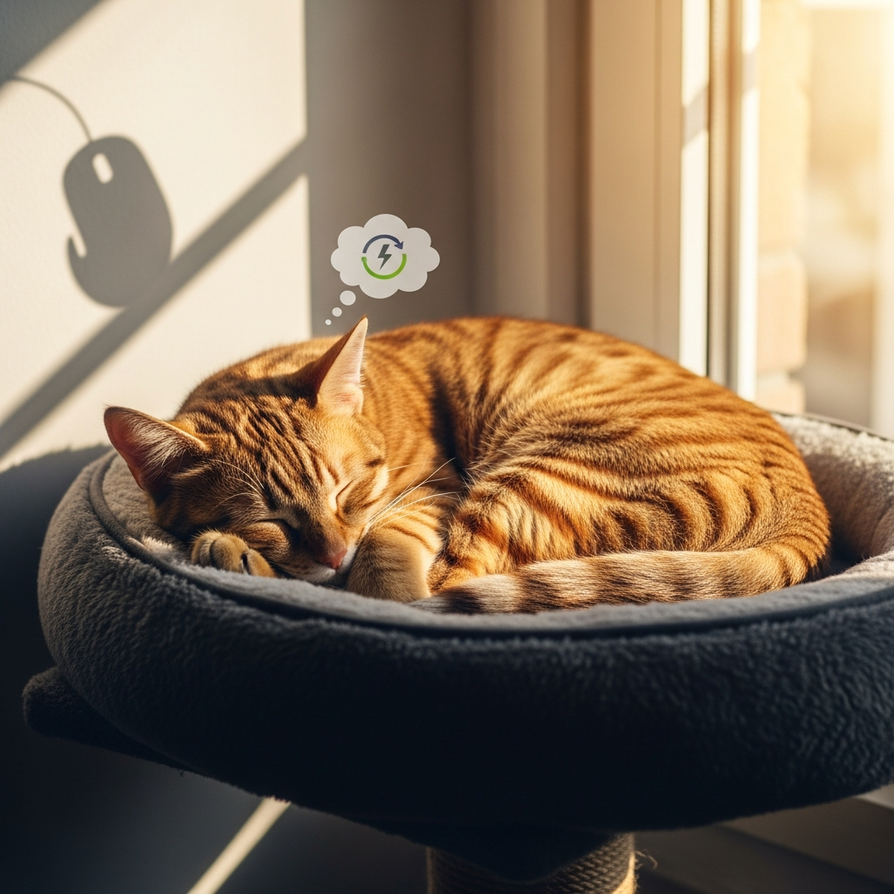

Conheça a evolução do mascote mais amado pelos desenvolvedores. Após um upgrade massivo de Inteligência Artificial, ele não apenas "comita", ele prevê o futuro do seu código.
Ver Recursos IA
Deixou de caçar ratos para caçar bugs em tempo real usando redes neurais avançadas.
Seus óculos AR analisam a complexidade ciclomática apenas olhando para o monitor.
Não precisa mais de CI/CD. Ele pensa, e o código está em produção (e testado!).


